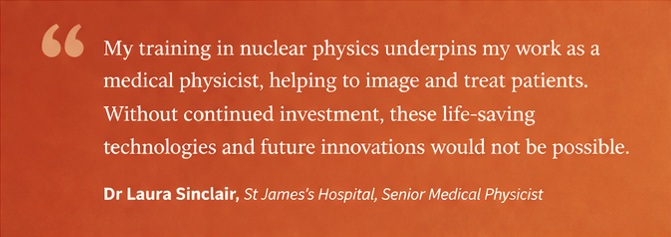
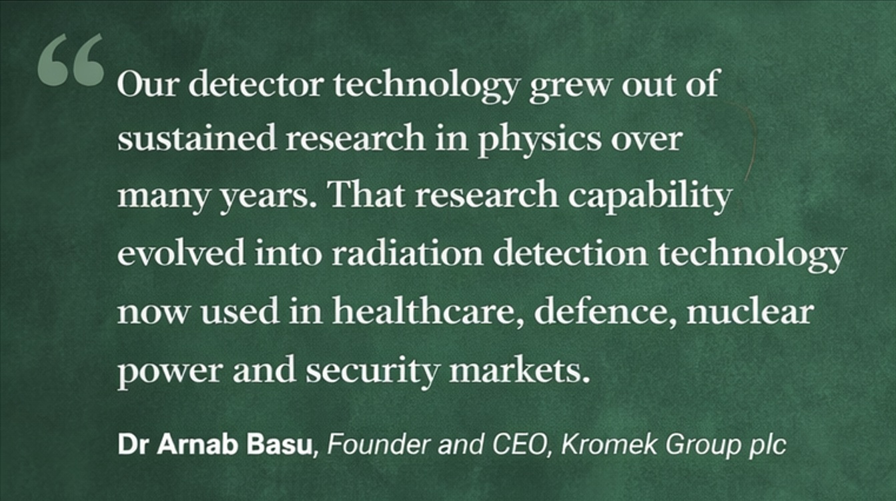
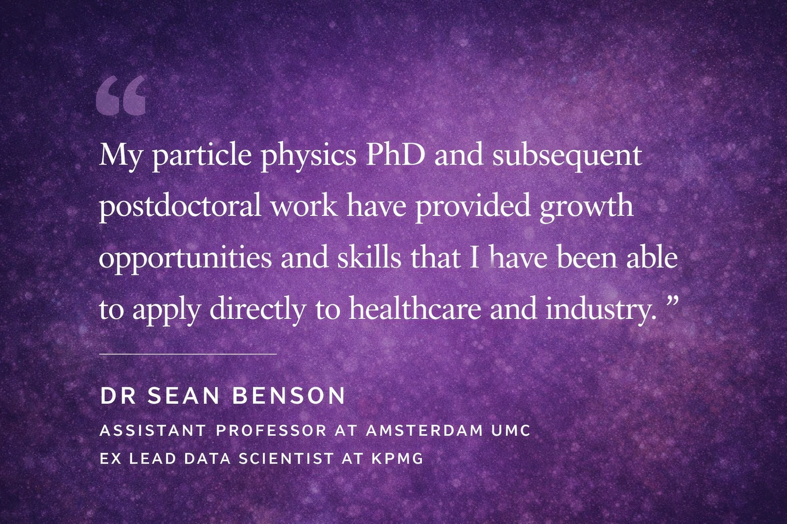
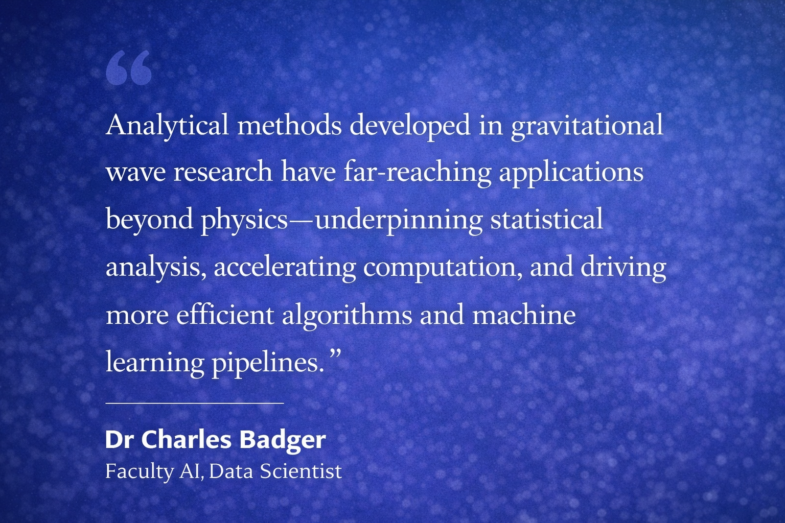
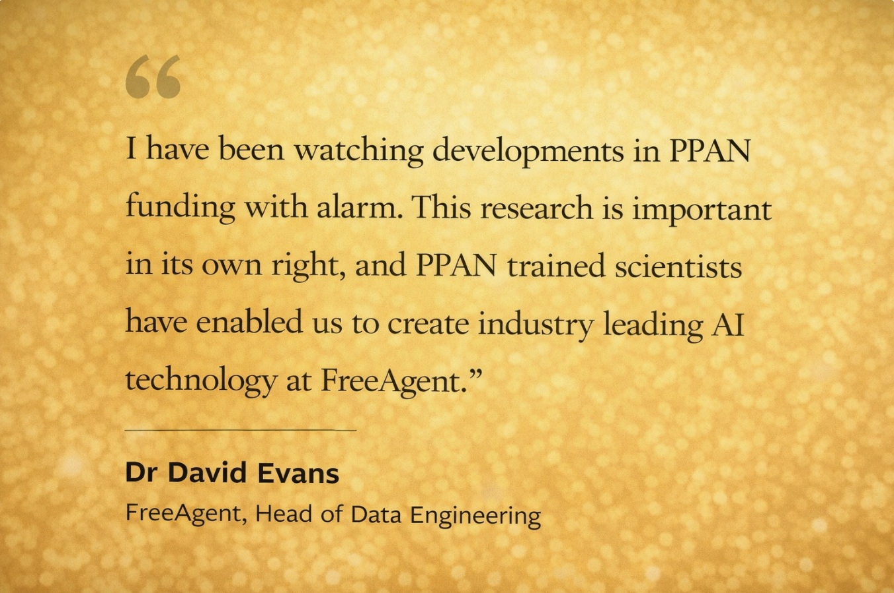

Industry Voices

Dr Laura Sinclair, St James's Hospital, Senior medical physicist — "I studied nuclear physics at the University of York, and had long-term placements in Jyväskylä and Riken. My training in nuclear physics underpins my work as a medical physicist in a hospital, where I help image and treat patients. Advances in detector development, medical physics, and isotope research all rely on this field and directly improve patient care. Without continued investment in nuclear physics, these life-saving technologies and future innovations would not be possible."

Dr Arnab Basu, Kromek Group plc, CEO — "Our detector technology grew out of sustained research in physics over many years. That research capability evolved into radiation detection technology now used in healthcare, defence, nuclear power and security markets."

Dr Sean Benson, Assistant Professor at Amsterdam UMC Assistant Professor, ex Lead Data Scientist at KPMG — "My particle physics PhD and subsequent postdoctoral work have provided growth opportunities and skills that I have been able to apply directly to healthcare and industry."

Dr Charles Badger, Faculty AI, Data Scientist — "The statistics and programming I developed during my Physics PhD form the foundation of my career as a Data Scientist. The technical and soft skills I gained allowed me to acclimatise quickly to industry, collaborating effectively and communicating clearly across teams and projects.The analytical methods born out of gravitational wave research have far-reaching applications beyond physics - underpinning robust statistical analysis, accelerating computationally intensive tasks, and driving more efficient algorithms and machine learning pipelines. Removing opportunities for others to engage with these cutting-edge ideas would be a mistake not just for UK academic research, but for UK industry's ability to benefit from them too."

Dr David Evans, FreeAgent, Head of Data Engineering — "I completed a PhD in particle physics in the UK (Bristol), subsequently continued to work in particle physics outside the UK, and am an engineering leader at a technology company in Scotland at present. I have been watching developments in PPAN funding with alarm. This research is important in its own right, and PPAN-trained scientists have enabled us to create industry-leading AI technology at FreeAgent. I have recruited multiple staff members from the PPAN community and have seen first-hand the high impact they have on the development of our product."